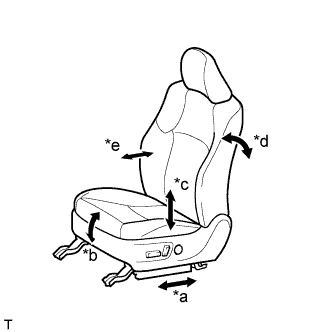

СИСТЕМА ПЕРЕДНИХ СИДЕНИЙ С ЭЛЕКТРОПРИВОДОМ (для моделей с запоминающим устройством) > ПРОВЕРКА РАБОТЫ СИСТЕМЫ |
| ПРОВЕРЬТЕ РАБОТУ ЭЛЕКТРОПРИВОДА ПЕРЕДНИХ СИДЕНИЙ |
|  |
Проверьте основные функции.
| *a | Функция продольного перемещения |
| *b | Функция вертикального перемещения передней части |
| *c | Функция подъема |
| *d | Функция наклона |
| *e | Функция перемещения опоры поясницы |
С помощью переключателей электропривода сидений проверьте работу всех функций сидений:
| ПРОВЕРЬТЕ ЭЛЕКТРОДВИГАТЕЛЬ ПРИВОДА СИДЕНЬЯ (ПРОДОЛЬНОГО ПЕРЕМЕЩЕНИЯ, ВЕРТИКАЛЬНОГО ПЕРЕМЕЩЕНИЯ ПЕРЕДНЕЙ ЧАСТИ, ПОДЪЕМА И НАКЛОНА) |
Проверьте работу термистора внутри электродвигателя привода сиденья.
Выберите функцию электропривода сиденья. С помощью переключателя электропривода сиденья переместите сиденье в одном из направлений до упора. Оставьте сиденье в этом положении примерно на 60 с.
Посредством переключателя электропривода сиденья попытайтесь переместить сиденье в том же направлении, что и на предыдущем шаге. Измерьте время, прошедшее до автоматического отключения тока (по звуку остановки электродвигателя).
После отключения тока отпустите переключатель электропривода сиденья и подождите приблизительно 60 секунд.
С помощью этого же переключателя электропривода сиденья переместите сиденье в противоположном направлении. Убедитесь, что электродвигатель работает.
| ПРОВЕРЬТЕ ЭЛЕКТРОДВИГАТЕЛЬ ОПОРЫ ПОЯСНИЦЫ |
Проверьте работу термистора PTC внутри электродвигателя опоры поясницы.
С помощью переключателя электропривода сиденья переместите опору поясницы в крайнее переднее или крайнее заднее положение. Оставьте опору поясницы в этом положении примерно на 60 с.
Посредством переключателя электропривода сиденья попытайтесь переместить опору поясницы в том же направлении, что и на предыдущем шаге. Измерьте время, спустя которое происходит отключение тока (исчезает звук работы регулятора).
После отключения тока отпустите переключатель электропривода сиденья и подождите приблизительно 60 с.
С помощью переключателя электропривода сиденья переместите опору поясницы в противоположном направлении. Убедитесь, что электродвигатель работает.
| ПРОВЕРЬТЕ ЗАПОМИНАНИЕ И ВОССТАНОВЛЕНИЕ ПОЛОЖЕНИЯ СИДЕНЬЯ |
Проверьте запоминание и восстановление положения.
| *a | Переключатель SET |
| *b | Переключатель M1 |
| *c | Переключатель M2 |
Для моделей с автоматической трансмиссией:
Включите зажигание и установите рычаг переключения передач в положение P.
Для моделей с механической трансмиссией:
Включите зажигание и задействуйте стояночный тормоз.
Посредством переключателей электропривода сиденья переместите сиденье в крайнее переднее и крайнее верхнее положение.
Убедитесь, что когда переключатели M1 и SET нажимаются и удерживаются, либо нажимается переключатель SET, а затем в течение 3 секунд – переключатель M1, зуммер подает звуковой сигнал в течение 0,5 с, и положение сиденья сохраняется в памяти.
Посредством переключателей электропривода сиденья переместите сиденье из крайнего переднего и крайнего верхнего положений в другие положения.
Убедитесь, что когда переключатели M2 и SET нажимаются и удерживаются, либо нажимается переключатель SET, а затем в течение 3 секунд – переключатель M2, зуммер подает звуковой сигнал в течение 0,5 с, и положение сиденья сохраняется в памяти.
Убедитесь, что при нажатии переключателя запоминающего устройства M1 в течение 0,1 с подается звуковой сигнал, и сиденье автоматически перемещается в крайние переднее и верхнее положения (положения, сохраненные в памяти).
Убедитесь, что при нажатии переключателя запоминающего устройства M2 в течение 0,1 с подается звуковой сигнал, и сиденье автоматически перемещается из крайних переднего и верхнего положений (положений, сохраненных в памяти).
Удалите содержимое памяти.
Установите замок зажигания в положение ON (ВКЛ).
Нажмите переключатель электропривода переднего сиденья (переключатель вертикального перемещения передней части сиденья) 3 раза вниз.
В течение 10 с после указанной выше операции выполните следующую операцию: одновременно в течение не менее 10 с осуществляйте наклон назад и подъем (зуммер подает звуковой сигнал длительностью 0,5 с). Это приводит к удалению данных из памяти.
| ПРОВЕРЬТЕ ФУНКЦИЮ ОБРАЩЕНИЯ К ПАМЯТИ |
Проверка функции вызова из памяти.
При условии, что код опознавания передатчика зарегистрирован в запоминающем устройстве, выполните разблокировку посредством системы посадки или дистанционного управления. Откройте дверь водителя и удостоверьтесь, что переднее сиденье и рулевое колесо автоматически перемещаются в положения, сохраненные в памяти.
Регистрация в памяти.
Выполните подготовку, сохранив положение для вождения с помощью переключателя запоминающего устройства сиденья (M1 или M2).
При включенном зажигании нажмите и удерживайте переключатель запоминающего устройства (M1 или M2) и ручной выключатель системы блокировки дверей (LOCK (ЗАБЛОКИР) или UNLOCK (РАЗБЛОКИР)). Продолжайте удерживать переключатели, пока зуммер не подаст сигнал подтверждения.
Удаление данных из памяти.
При включенном зажигании нажмите и удерживайте переключатель запоминающего устройства SET и ручной выключатель системы блокировки дверей (LOCK (ЗАБЛОКИР) или UNLOCK (РАЗБЛОКИР)). Продолжайте удерживать переключатели, пока зуммер не подаст сигнал подтверждения.
| ПРОВЕРЬТЕ ФУНКЦИЮ АВАРИЙНОЙ БЛОКИРОВКИ ОБРАЩЕНИЯ К ПАМЯТИ |
В процессе работы функции обращения к памяти выполните одну из следующих операций и убедитесь, что обращение к памяти прекращается.